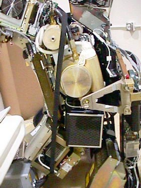

Operating Documentation
Direction 5114045-800, Rev# 10
LightSpeed 4.X Service Information (Advanced)
Operating Documentation |
| Required Persons | Preliminary Reqs | Procedure | Finalization |
|---|---|---|---|
| 1 |
| Last Revised: | March 30, 2004 |
| Item | Qty | Effectivity | Part# | Manufacturer | |
|---|---|---|---|---|---|
| 12 inch extension for hex key | 1 | - | - | - | |
| 10mm, 8mm 6mm, 5mm hex keys | 1 | - | - | - | |
| Item | Qty | Effectivity | Part# | Manufacturer | |
|---|---|---|---|---|---|
| Axial drive belt | 1 | - | - | - | |
Remove the following covers:
Gantry side covers
Gantry top covers
Gantry front cover
Gantry rear cover
Lower slipring cover
| ELECTROCUTION HAZARD | |
| HIGH VOLTAGES PRESENT. | |
| Use proper lockout/tagout procedures before replacing components. See safety menu of Service Document gui for appropriate procedures. |
Turn off all 3 switches (Axial Drive, HVDC, 120VAC). Remove all system power at the Main Disconnect panel and use proper Lockout/Tagout procedures.
Remove the Home Flag assembly to prevent damage (see Home Flag and Sensor Board Assembly Replacement).
Remove the Axial Encoder to prevent damage to the encoder gear teeth (see Axial Encoder Assembly Replacement).
Disconnect power connector to OBC power distribution board.
Remove the HEMRC cover.
Rotate the tube to the 3 o'clock position. Do not engage the rotational lock.
Loosen the two (2) M12 screws with the 10mm hex key (see Illustration 1).
Illustration 1: To loosen drive belt, loosen 2 screws and the long hex screw

Using the 6mm hex key and the 12 inch extension, fully loosen the elongated hex screw to remove the drive belt from the drive gear (see Illustration 1).
Remove the drive belt from the drive gear.
| NOTE: | To remove the drive belt requires no slack around the rotating assembly. You will need every millimeter of length to clear the corner of the HEMRC. This is very tight, but it can be done, as shown in Illustration 2. |
Illustration 2: Axial Drive Belt Installation/Removal Critical Path

Work the belt toward the table on the rotating assembly. Keep all slack at the tube side of the gantry.
| Use caution around the OBC to prevent damage to the OBC Power-I/F board. Patience is the key. | |
Work the belt around and behind the OBC to provide enough length to cross the tube.
Work the belt between the HEMRC and the tube radiator.
Once belt is over the hose, work belt around cathode end of the tube and radiator. You need to get in front of the tube to clear the corner of the HEMRC.
Once the belt is past the tube, carefully gather all the slack to clear the HEMRC corner.
When the HEMRC is cleared, then carefully work the belt around the rest of the rotating gantry, completing the removal process.
Install the belt using the removal Removal, Step 11 through Removal, Step 16, in reverse order.
Connect the power connector to the OBC Power-I/F board.
Install the home flag, axial encoder and the HEMRC cover.
Slide the belt over the main drive gear and align it towards the back of the rotating assembly teeth. Check both top and bottom.
Work the belt through the pulley tensioner assembly and place on motor drive gear.
Tighten the elongated hex screw using a 6mm hex key and a 12 inch extension. Apply enough tension so the washer can be rotated with your fingers.
Rotate gantry by hand several times and check tension. Make sure the belt does not slip off tensioning pulley and is tracking correctly toward the rear of the gantry. Repeat step 2g as needed.
Correct tension is achieved when the washer can be turned by finger, with some difficulty.
Tighten the two (2) M12 screws to 30 Ft-lbs. This locks the tensioner assembly.
Install the home flag assembly . Reference “Axial Home Flag Check” located in Axial Motion Checks.
Install the axial encoder and adjust (see Resetting the C-Pulse).
Run Microphonics, a test under DAS Tools (see Pop Noise and Microphonics Test).
Perform System Scanning Test (see System Scanning Test).